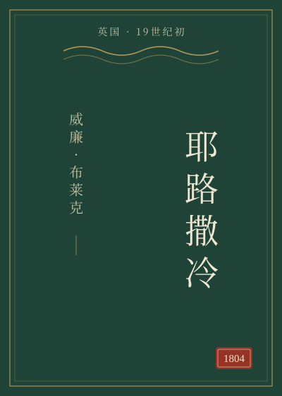

耶路撒冷
一、基本信息
| 作者 | 威廉·布莱克 |
|---|---|
| 成书/出版 | 1804-?20年（Britannica B397：Jerusalem (1804-?20)） William Blake — Encyclopaedia Britannica（百科全书） |
| 国别/地区 | 英国 |
| 时代 | 近代 · 19世纪初 |
| 体裁 | 长诗（预言书） |
| 语言 | 英语 |
《耶路撒冷》合一结构图（主题·结构图）
二、创作背景
Britannica（B397）：Jerusalem (1804-?20)——布莱克预言书之一（年份区间口径）。
Britannica（B397）：Milton 中的'Jerusalem'歌词——'which has become a kind of second national anthem in Britain'。
题材（通说待核）：'巨灵阿尔比恩'的分离与合一——预言书的收束。
三、内容脉络
（通说待核——B397未载细节）阿尔比恩（英国）的'四大原力'分离与合一。
（通说待核）'耶路撒冷'：内在天国的降临。
四、主要人物表
| 人物 | 身份 | 说明 |
|---|---|---|
| 阿尔比恩 | 巨灵/英国 | （通说待核） |
五、主题与艺术特点
- '合一'的预言（通说待核）。
- '彩色印刷'的自印（B397 交叉）。
- '英国'的神话化（书名语境——通说待核）。
六、影响与评论
- Britannica：Milton 中'Jerusalem'歌词——'second national anthem'（B397 交叉）。
William Blake — Encyclopaedia Britannica（百科全书） - Britannica：预言书序列（B397 交叉）。
William Blake — Encyclopaedia Britannica（百科全书）
七、阅读建议
难点
- '原力'（Zoas）体系。
- 自创神话的词汇。
- 《耶路撒冷》中译名（《耶路撒冷》）待核。
- 英文原版（公有领域）。
布莱克预言书收官；先读《弥尔顿》。
八、待核实
- '1804-?20'年份口径核对（B397）。
- '100版'彩色印刷细节待核（通说）。
- '原力'体系待核（通说）。